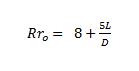

Fator de Taxa de Redução - Moinho de bolas
A taxa de redução ótima é dada por:

Onde:
L = comprimento das barras em pés Diâmetro do moinho em pés, medido internamente ao revestimento.
D = diâmetro do moinho em pés medido internamente ao revestimento.
Para moinhos de barras de descarga central periférica, a taxa de redução ótima será metade do valor Rro calculado.
O fator EF6 é calculado pela seguinte fórmula: